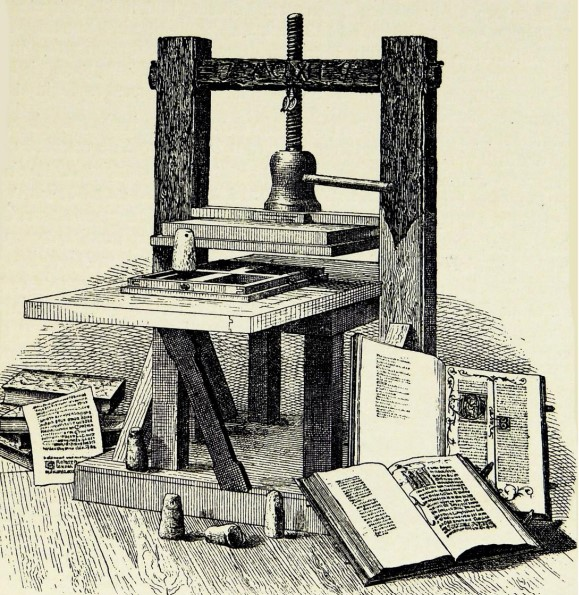
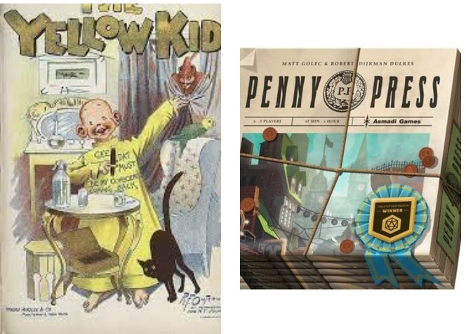
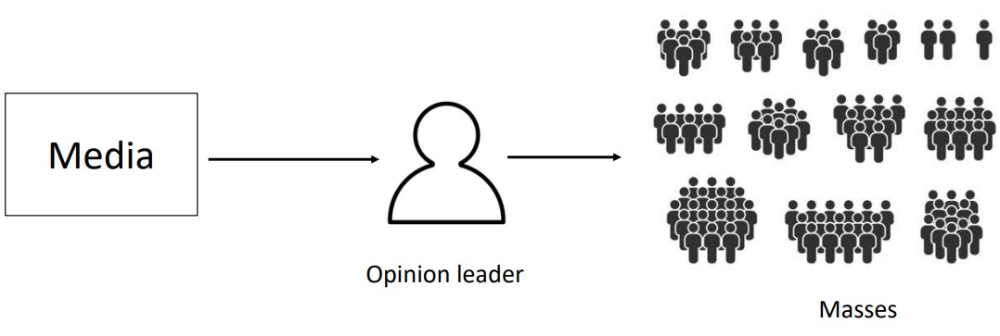

3 History of Media Effects and Time Spent with Media
Media was traditionally consumed orally or in written forms. In other terms, knowledge was transmitted via speech or in writing.
3.1 Mass Communication at Scale
Johannes Gutenberg is associated with the invention of the printing press in 1452. The first book printed was the Gutenberg bible.
The press revolutionized communication in ways such as:
- Facilitating the spread of knowledge and ideas in a way that was fast and economical.
- Made it easier to access knowledge.
- Starting the idea of “mass communication”.
- Accelerating the growth of social movements.
3.2 Key Moments in Media Effects
3.2.1 Media and War

The penny press is the ability to mass-produce papers at a low cost. Penny presses may also involve yellow journalism: articles that are sensanationalistic for the sake of increasing readership or sales.
Media can also be used as a platform to sell anything - including war (i.e., see above propaganda).
3.2.1.1 Experiments on Movies on World War 2
The American government noticed that the Germans were effectively using wartime scenarios in films - consequently, the government called upon Hollywood for its war efforts.

Frank Capra was called upon to make a film series titled Why we Fight. This series was shown to the public (particularly military members) to boost their morales and influence their public attitudes.
The American government also commissioned a team of researchers to find out how effective Capra’s films were in influencing public opinion - they found out the following:
- There were no profound effects.
- There was evidence that there was a motivational change in soldiers.
- Perhaps it could be due to a “ceiling effect”?
3.2.1.2 Payne Fund Studies
In 1928, there were concerns over the effects that movies had on children.
Hence, Edgar Dale studied 1500 films’ contents and classified them. His work showed that more than 75% of the films he analyzed could be put into one of three categories: crime, love, and sex.
His findings were as follows:
Physiological Responses
The children showed no physiological responses1, but adolescents showed increase physiological responses.
Behavioral Responses
Herbert Blumer administered questionnaires and interviews with children, adolescents, and young adults.
From this, the theory of social learning was developed: children are likelier to imitate characters who are rewarded for their behaviors and are seen as “attractive”.
3.3 Media Effect Theories
CS5005 covers the following theories:
Hypodermic Needle (of mass communication)
This is also known as the magic bullet model. This theory states that media is a powerful catalyst for change and influence.
All media are powerful and people are vulnerable to their effects.
Two-Step Flow of Communication

Diagrammatic Illustration of Two-Step Flow This theory states that media’s effects are limited to a few people (i.e., people who have authority or opinion people) who in turn will influence others via interpersonal communications.
Selective Exposure to Communication
This thoery states that people are motivated to expose themselves to messages that they agree with while avoiding messages that they don’t agree with.
Note that media theories 2. and 3. are what as known as limited effects models (or theories): theories or models that state that media effects are small to negligible.
3.4 Media Use and Gratifications
Individuals can use media for a variety of reasons, including but not limited to:
- Learning
- Habitual usage
- Companionship (e.g., parasocial2 relationships)
- Arousal (e.g., sensation seeking)
- Relaxation escapes
- Passing time
- Social interactions
3.5 Media as the Boogeyman
The displacement hypothesis states that media can displace the following:
Important Activities
Including sleep, relationships, and academic learning or work.
Public Health Problems
Including obesity, mental health issues, and body image dissatisfaction.